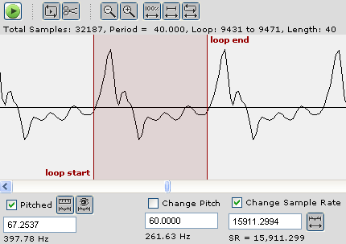

|
Mobileer Instrument Editor
CONFIDENTIAL and PROPRIETARY - © 2002-6 Mobileer Inc.
|
Mobileer Instrument Editor
Setting a Loop
If you are creating a pitched WaveTable then you will probably want to set a loop. A loop is a small portion of the middle of a wavetable that you can play repeatedly for a sustained tone. This can save lots of memory.

- Let's assume that you have already measured the pitch accurately.
- Click the "Zoom out all the way" button

- Select a region near the start of the waveform and zoom in on it until you can see individual cycles clearly.
- Find an first area where the cycles are not changing shape radically from one to the next. The timbre is stable here and would make a good loop point.
- Click down on the waveform and drag to the right until you highlight one cycle. If you pick more than one cycle then you can get low-sounding subharmonic partials when you play the loop.
- Click the "Loop this selection" button to set the loop. Notice the status info on the wave display changes. Also notice that the loop region is highlighted in a different color.
- To hear your loop, click the "Play Button". .
- To change loops quickly, select "Options->Auto Set Loop" and select another cycle. The loop will now change automatically and you should hear a very slight change in the tone.
- If the loop sounds too buzzy, then select Options->Auto Crossfade. That will produce a smooth transition between the beginning and the end of the loop. This is often needed for instruments with rapidly changing timbres like pianos and guitars.
- By default, we trim off the portion after the loop and to make the instrument sound decay using an envelope. If you want to keep the samples after the loop then deselect "Options->Auto Trim After Loop".
- Hit the Play button again to hear the note-off decay.
| Top | Previous | Next |